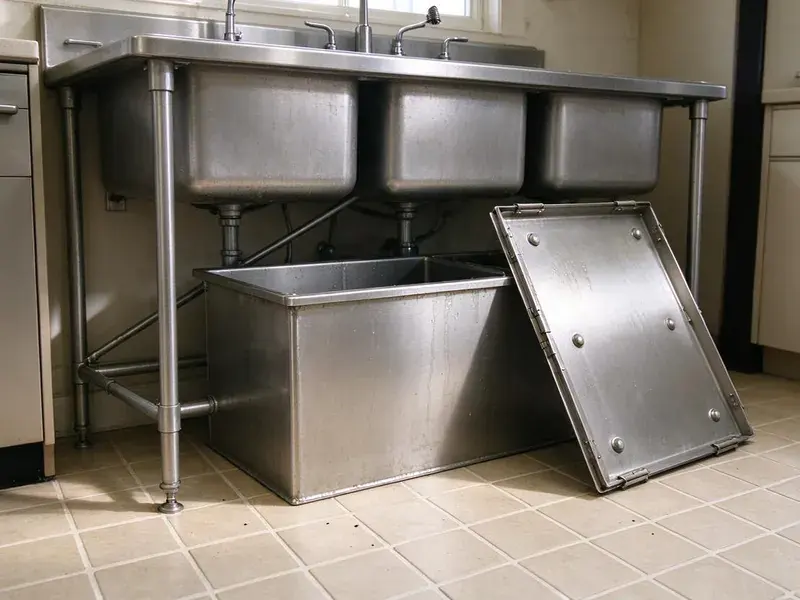

Garbage Disposal Replacement in Ogden, UT
Old disposal leaking or jamming nonstop? We replace garbage disposals across Ogden, UT with quieter, more powerful models.
- Every Joint Tested
- Same-Day Replacement
- Old Unit Haul-Away Included
- One-Hour Swaps

Upgrade to a Quieter, Stronger Disposal in Ogden, UT
Call now and we can often replace your disposal the same day.
The Ogden Plumbers for Disposal Replacement
BPK Plumbing helps Ogden homeowners pick replacement disposals that fit the cabinet and the budget. A lot of people upgrade. Moving from an old 1/3 HP unit to a 1/2 or 3/4 HP model with sound insulation usually means fewer jams and a much quieter kitchen, and we haul the old unit away.
Work we handle every week:
- Upgrade to InSinkErator Evolution and other quiet models
- Replace sink flanges, mounts and discharge tubes when needed
- Remove leaking or failed disposals and put in new ones

Additional Kitchen Plumbing Services in Ogden, UT
Our kitchen plumbing services in Ogden, UT cover sinks, disposals, dishwashers, and grease traps so your kitchen stays clean, safe, and fully functional.


Customers
Why Choose BPK Plumbing for Garbage Disposal Replacement in Ogden, UT?
A replacement should last ten years or more. That depends on the unit, the install and how it gets used, so we pick a model that fits your cooking, install it to the maker's specs and show you what to keep out of it in your Ogden home.
- Code Compliance, Every replacement follows local Ogden, UT plumbing code for traps and dishwasher drains.
- Correct Sizing, We help you pick from 1/3 HP to 1 HP based on your household.
- Clear Pricing, You get one flat price covering unit and labor before we start.
Citywide Coverage
No matter where you live in Ogden, a plumber can usually reach you the same day. Dispatch is local. Calls go to the closest plumber with the right unit on board, which keeps the wait short when the sink is full and the dishwasher cannot drain.
Experienced Team
The team at BPK Plumbing is trained on every step of a disposal swap. Each step has a reason. Scraping old putty, seating the flange gasket flat and clamping the dishwasher hose past the barb take only minutes, and they are the difference between a dry cabinet and a callback.
Safety-First Approach
Trap and dishwasher drain connections follow Utah plumbing code. We dispose of old units properly. Many scrap yards take disposals for the steel and copper in the motor, so the old unit usually ends up recycled instead of sitting in a landfill.
Trusted Certified Ogden Plumbing Services Professionals
At BPK Plumbing, we are proud to offer certified plumbing services throughout Ogden, UT. Credentials matter in this trade. Every repair, install and maintenance visit follows strict safety and quality rules, and the plumbers doing the work carry recognized industry credentials.
Call Us Now PHCC Plumbing Contractor Recognition
PHCC Plumbing Contractor Recognition Better Business Bureau (BBB) Accreditation
Better Business Bureau (BBB) Accreditation Angi Certified Pro
Angi Certified Pro ISO 9001 Quality Management Certification
ISO 9001 Quality Management CertificationGarbage Disposal Replacements We Handle in Ogden, UT
Higher Horsepower Replacement in Ogden, UT
Going from 1/3 HP to 1/2 or 3/4 HP cuts down on jams in most kitchens, especially for big families or people who cook from scratch every night. We check the circuit, the cabinet space and the trap height before ordering, because a bigger unit draws more at startup and sits lower in the cabinet. Usually it fits without trouble.

Commercial Unit Replacement in Ogden
Restaurant disposals take a beating every shift, and when one fails the dish line backs up. We replace failed commercial units with heavy-duty models sized to your volume, check the control panel and water solenoid, and confirm the setup meets local health and sewer rules. Local rules vary.
Choosing a Replacement on a Budget in Ogden, UT
The cheapest option is a basic 1/3 HP unit, but in a busy kitchen it often jams and wears out sooner. A 1/2 HP model usually hits the best balance for a typical family, with enough power for everyday scraps and a price well below the premium lines. We lay out the options plainly. Both prices go on the quote when it is close.
Replacement Options by Price in Ogden
Basic disposals do fine with light use, mid-range units suit most families, and premium models add quiet operation and longer warranties. We explain what each level gets you, including horsepower, grind stages, noise and warranty length, then quote the one you pick with installation included. We do not push the top model.
Mount and Flange Replacement in Ogden
We check the flange and mount on every replacement. Corroded, scratched or leaking parts get replaced, which stops top leaks and gives the new disposal a tight seal at the sink. Old putty gets scraped off.
Higher Horsepower Disposal Upgrades in Ogden, UT
If your old disposal struggles, a 3/4 or 1 HP unit can help. More power means fewer jams and finer grinding, and we confirm that your electrical supply and cabinet space can handle the larger unit before we install and test it. It usually fits fine.
Replacing Leaking Disposals in Ogden, UT
A slow leak under the sink can rot the cabinet base and leave a musty smell long after the drip is fixed. If your disposal leaks from the housing or a cracked body, replacement is the only real fix, and we inspect the cabinet floor for water damage before installing the new unit. Every seal is new. That includes the flange, discharge and dishwasher inlet.

Upgrading During Replacement in Ogden, UT
A swap is the right moment to move up in horsepower, from an old 1/3 HP to a 1/2 or 3/4 HP unit. Larger units are taller, so we measure the cabinet and check that the discharge outlet will still sit above the trap, since a disposal outlet below the wall stub leaves water standing in the chamber. Insulated models run much quieter. You hear the difference right away.
Garbage Disposal Replacement Near Me in Ogden, UT
A backed-up sink needs a fast answer. Our plumbers work across Ogden every day with replacement units on the truck, and most replacements wrap up about an hour after we arrive, with the old unit hauled away. One visit does it.
Our plumbers know how homes here are plumbed. We know which older kitchens have galvanized drain arms in Ogden, and those arms are worth replacing during the swap because they rust shut from the inside and slow the new disposal down. Just ask on the phone at (385) 543-4073.
BPK Plumbing at a Glance
- Licensed and insured plumbers serving Ogden, UT
- Same-day appointments and 24/7 emergency response
- Upfront, flat-rate pricing before work begins
- 4.8-star rated by 470+ Utah customers
Ogden Map
Ogden Information
- Population
- 87,267
- Area codes
- 801/385/435
- Service area
- Ogden and communities within 40 miles
- Nearby
- Layton, Salt Lake City, Logan, West Valley City
Scale, grease and daily use over the years wear disposals out, so replacing a failing unit before it floods the cabinet saves Ogden, UT homeowners a bigger repair.
Expert Services
Reach out to BPK Plumbing for reliable plumbing work done by licensed pros in Ogden, UT.
Our Specialized Plumbing Services in Ogden, UT
At BPK Plumbing, you get every kind of plumbing service from one company across Ogden, UT. We go from leak detection all the way to full system installations, for homes and commercial buildings, and we do it quickly at a fair price. Take a look at our core services below:


Our Garbage Disposal Replacement Steps in Ogden, UT
Start to finish, a disposal swap usually takes about an hour.
Call for a Price
Call (385) 543-4073 and tell us about the old disposal. We will quote the unit and labor together.
Check the Old Unit
Your plumber confirms it needs replacing at your Ogden home and helps you pick the new unit.
Remove and Install
We remove the failed unit, install the new one on a fresh mount and run it with water to check for leaks.
Frequently Asked Questions About Garbage Disposal Replacement in Ogden
Expect about $200 to $500 with the unit and labor. The model, its horsepower and whether the drain or wiring needs changes all move the price, and a same-brand swap on a good mount sits near the low end. The quote is flat.
Warranties from the maker usually run two to ten years, and we guarantee our labor.
It depends on age and the failure. Fix a newer unit with a jam or loose flange, but replace an older one that leaks from the body or no longer grinds well.
Keep celery, corn husks, onion skins, grease and coffee grounds out of it. Use cold water every time. Run the unit for 15 seconds after the food is gone so scraps clear the trap, and grind a few ice cubes now and then to knock scale off the grinding ring.
Continuous-feed units run from a switch while you add food. A batch-feed unit starts only with its lid in place, so hands stay out, though you grind a load at a time. We replace both types.
Most last 8 to 12 years. Hard water, heavy use and grease can shorten that.
One to two hours covers most swaps. Removing the old unit, installing the new one and testing are all included, though a brand change, lowered drain or new wiring adds time.
Frequent clogs, loud grinding that does not break food down, leaks from the housing or a unit that stops turning on. Age matters too. Past ten years, most disposals are near the end, and spending on repairs rarely makes sense compared to a new unit with a fresh warranty.
What Our Customers Say About Our Plumbing Experts

Jessica T.
We were adding a gas range in a kitchen remodel and needed a new line run from the meter. The plumber pulled the permit, ran the pipe through the crawl space, and had it inspected and approved within the week.
Gas Line Repair · Salt Lake City, UT
Megan L.
Our upstairs tub drained so slowly that every shower turned into a bath. BPK Plumbing pulled a wad of hair out of the stopper and then snaked the line past the trap. Three months later it still drains fast.
Drain Cleaning · Salt Lake City, UT
Angela D.
Our sump pump quit during a storm and the water was an inch from the basement carpet. BPK Plumbing put in a new pump with a battery backup that same evening. We have had two heavy rains since. It kicked on both times.
Sump Pump · West Valley City, UT
Paul B.
Our pit pump ran nonstop even in dry weather. The plumber found the check valve was stuck open, so the same water kept cycling back into the pit. New valve, new float switch, done in an hour. It runs quiet now.
Sump Pump · Ogden, UTKaren W.
After our third pinhole leak in copper, we stopped patching. BPK Plumbing gave us a written plan room by room and repiped the house in PEX while we stayed in it. The crew covered our floors every morning and cleaned up every night.
Repiping · Millcreek, UT
Nathan E.
Our tankless heater kept throwing an error code and shutting off mid shower. The tech flushed the heat exchanger, which was full of scale, and replaced a bad flow sensor. Hot water has been steady for half a year now.
Water Heater Repair · Layton, UT